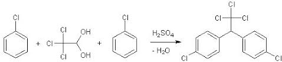
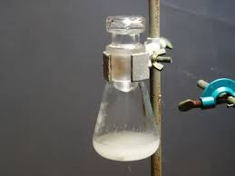
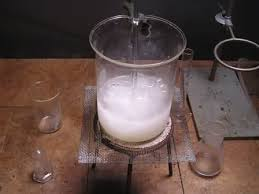
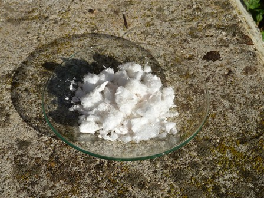

Se tu non fossi proprio giovanissimo e qualcuno ti dicesse: pensa ad un insetticida antimosche, antizanzare, antitutto... pensa ad un classico insetticida da dare con il vecchio spruzzatore a pompetta... tu a cosa penseresti? Tempo di riflessione mezzo secondo: al DDT!
(A casa mia un tempo usare questo spruzzatore con il DDT si chiamava "dare il flit" ed era la gioia di noi bambini riempire la pompetta di acqua e dare il flit dovunque!).
Questa sostanza, ora proibita per le sue capacità di accumulo nei tessuti animali superiori, per la sua lunga persistenza e per la tossicità verso gli animali acquatici, ha svolto miracoli nella lotta alla malaria ed è una delle sostanze che veramente hanno cambiato il mondo, dal suo pratico impiego nel 1939 agli anni sessanta e oltre.
Ebbe anche il paradossale merito di aver fatto nascere il movimento ambientalista!
DDT è l'acronimo di Dicloro-Difenil-Tricloroetano [1,1,1-tricloro-2,2-bis(p-clorofenil)-etano] e fu scoperto dal chimico austriaco Othmar Zeidler nel 1874; ma l'impiego su vasta scala si ebbe solo a partire dal 1939 per opera di P.H.Muller, per controllare l'endemicità della malaria che mieteva milioni di vittime in tutto il mondo.
(Altra piccola digressione: Carlo Levi in "Cristo si è fermato a Eboli" descrive magistralmente questa terribile situazione di endemicità nella nostra Lucania degli anni '30).
Da tempo volevo provare la sua sintesi, la quale sempre inesorabilmente si arenava contro la necessità di utilizzare l'acido clorosolfonico HOClSO2 come reagente indispensabile, il quale, oltre che molto tosto da usare (ma questo è il problema minore...) è assai problematico da reperire.
Navigando in rete, dove se si è perseveranti nella ricerca si trova tutto, o quasi, ho scoperto che l'acido clorosolfonico NON è indispensabile.
Anche qui, per uno sporcaprovette impenitente come chi scrive, mezzo secondo di riflessione: caspita che colpaccio, proviamo questa storica condensazione!
Detto fatto, ecco la reazione di massima e la procedura.

Materiale occorrente:
- cloralio idrato CCl3-C(OH)2
- clorobenzene C6H5-Cl
- acido solforico
- isopropanolo
- vetreria opportuna

In una beuta da 100 ml con tappo smerigliato, porre 4 g di idrato di cloralio [aldeide tricloroacetica idrata CCl3-CH(OH)2 ] in 4,2 ml di clorobenzene, riscaldando leggermente fino a soluzione completa. Porre su agitatore magnetico e aggiungere lentamente 66 g (36 ml) di acido solforico concentrato.La miscela diventa subito leggermente lattiginosa; mescolare sempre per un'ora circa e poi lasciar riposare fino al giorno successivo, con tappo ermeticamente chiuso.
Il liquido assume colore giallastro.

Mescolare ancora e lasciar riposare ulteriori 4 giorni o anche più, mescolando ogni tanto il liquido giallino torbido.Si trova alla fine formato un solido sul fondo della beuta immerso in un liquido giallo carico. Aprire cautamente il tappo (attenzione ad eventuale sovrapressione!) e versare il contenuto in un becker da 600 ml pieno per un terzo di ghiaccio.
Mescolare, risciacquare bene la beuta e filtrare su buchner, trattenendo il solido nel becker e facendo passare prima tutto il liquido acido, biancastro anche oltre il filtro.
Risciacquare e lavare, cercando di spappolare bene il residuo solido con 30 ml di acqua, poi con 20 ml di soluzione al 5% di bicarbonato di sodio e poi con ulteriori 50 ml di acqua, usando sempre il filtro precedente e aspirando bene.
Ricristallizzare il prodotto da alcol isopropilico (80 ml isopropanolo + 20 ml acqua) e lasciar raffreddare lentamente. Filtrare e seccare all'aria.

Resa 3,3 g (circa 46%) di DDT, compresa la discreta quantità dei suoi isomeri (il cloro è in -p, in -o e mix).
La resa non è eccelsa ma accettabilissima, visto il metodo semplice e che non richiede l'utilizzo della famigerata cloridrina solfonica.
Il DDT cristallizza (con questo sistema) in piccolissimi aghetti perfettamente bianchi, lanosi e leggerissimi, insolubili in acqua, di odore leggero ma persistente e caratteristico, non spiacevole.
La bella molecola di questa sostanza (per "qualcuno" le molecole sono tutte belle ... e quelle di autosintesi lo sono ancora di più!) la possiamo ora mettere nella bottiglietta in mezzo a quelle che a pieno diritto hanno fatto la storia, come dicevo all'inizio.
2 commenti